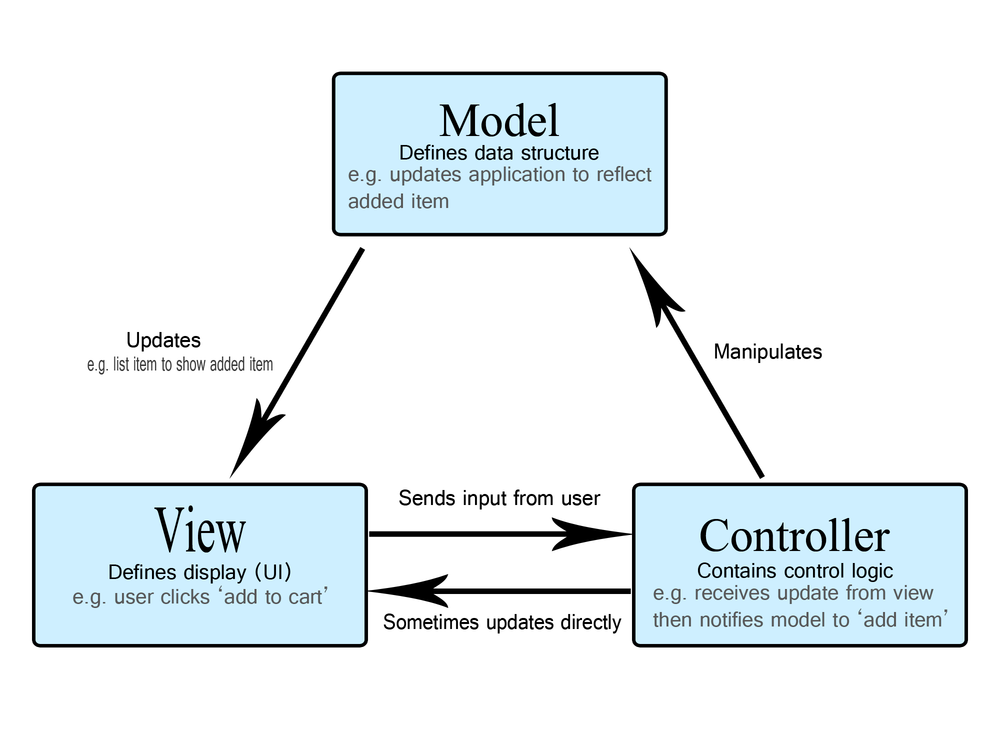

MVC (Model-View-Controller) is a pattern in software design commonly used to implement user interfaces, data, and controlling logic. It emphasizes a separation between the software’s business logic and display. This "separation of concerns" provides for a better division of labor and improved maintenance. Some other design patterns are based on MVC, such as MVVM (Model-View-Viewmodel), MVP (Model-View-Presenter), and MVW (Model-View-Whatever).
The three parts of the MVC software-design pattern can be described as follows:
Imagine a simple shopping list app. All we want is a list of the name, quantity and price of each item we need to buy this week. Below we'll describe how we could implement some of this functionality using MVC.

The model defines what data the app should contain. If the state of this data changes, then the model will usually notify the view (so the display can change as needed) and sometimes the controller (if different logic is needed to control the updated view).
Going back to our shopping list app, the model would specify what data the list items should contain — item, price, etc. — and what list items are already present.
The view defines how the app's data should be displayed.
In our shopping list app, the view would define how the list is presented to the user, and receive the data to display from the model.
The controller contains logic that updates the model and/or view in response to input from the users of the app.
So for example, our shopping list could have input forms and buttons that allow us to add or delete items. These actions require the model to be updated, so the input is sent to the controller, which then manipulates the model as appropriate, which then sends updated data to the view.
You might however also want to just update the view to display the data in a different format, e.g., change the item order to alphabetical, or lowest to highest price. In this case the controller could handle this directly without needing to update the model.
As a web developer, this pattern will probably be quite familiar even if you've never consciously used it before. Your data model is probably contained in some kind of database (be it a traditional server-side database like MySQL, or a client-side solution such as IndexedDB [en-US].) Your app's controlling code is probably written in HTML/JavaScript, and your user interface is probably written using HTML/CSS/whatever else you like. This sounds very much like MVC, but MVC makes these components follow a more rigid pattern.
In the early days of the Web, MVC architecture was mostly implemented on the server-side, with the client requesting updates via forms or links, and receiving updated views back to display in the browser. However, these days, more of the logic is pushed to the client with the advent of client-side data stores, and XMLHttpRequest allowing partial page updates as required.
Web frameworks such as AngularJS and Ember.js all implement an MVC architecture, albeit in slightly different ways.